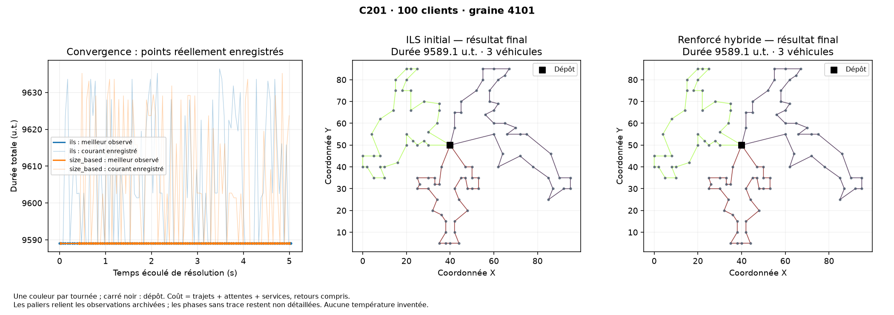
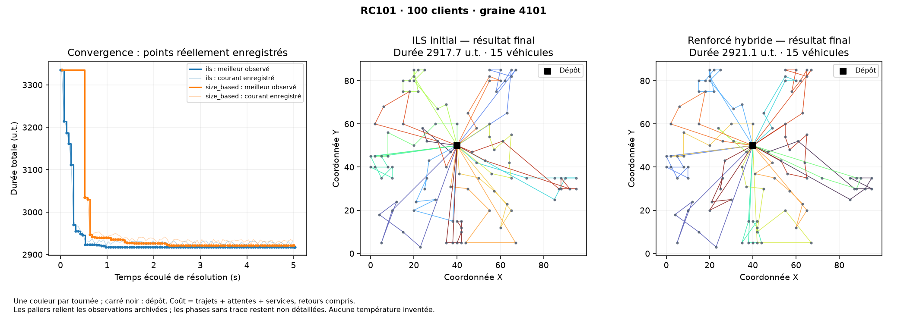

Les cartes comparent les solutions finales des méthodes affichées. Pour le couple standard, « initial » désigne notre ILS autonome ; « renforcé » intègre la recherche locale et éventuellement le HGS externes PyVRP. Une couleur représente une tournée, et le carré noir le dépôt. Les trajets de retour sont dessinés.
La convergence montre les meilleurs coûts et, lorsqu’ils sont enregistrés, les coûts courants. Les points proviennent des journaux ; aucune température ou trajectoire intermédiaire manquante n’est fabriquée. Une carte spatiale ne suffit pas à prouver la faisabilité horaire : les solutions sont vérifiées par le contrôleur.
L’écart porte sur un plan témoin compatible réévalué en durée, sans preuve d’optimalité temporelle. La génération de ces figures intervient après le lot, hors chronométrage de résolution ; son coût est enregistré séparément dans GRAPHIQUES.json.

| Méthode | Réalisable | Durée (u.t.) | Véhicules | Comparaison au témoin / statut | Réel (s) | CPU (s) |
|---|---|---|---|---|---|---|
| ils | OUI | 9589.1000 | 3 | Référence égalée — optimalité non démontrée | 5.0281 | 5.0156 |
| size_based | OUI | 9589.1000 | 3 | Référence égalée — optimalité non démontrée | 5.0014 | 4.9062 |

| Méthode | Réalisable | Durée (u.t.) | Véhicules | Comparaison au témoin / statut | Réel (s) | CPU (s) |
|---|---|---|---|---|---|---|
| ils | OUI | 2917.7000 | 15 | Référence dépassée — solution améliorante validée | 5.0292 | 4.9219 |
| size_based | OUI | 2921.1000 | 15 | Référence dépassée — solution améliorante validée | 5.0015 | 4.8750 |